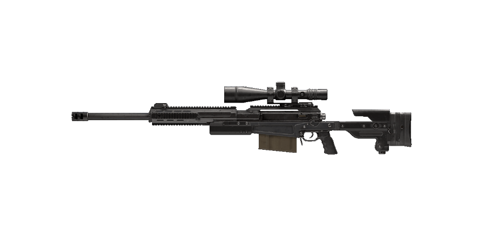

Doporučený loadout
Muzzle
LIGHTWEIGHT SUPPRESSOR
Barrel
17.0" FACTORY BARREL
Laser
TAC LASER
Stock
SINGUARD ARMS ASSASSIN
Perk
SLEIGHT OF HAND
Foto
Statistiky
Reálné informace
Accuracy International AX50 je přesná protipancéřová puška ráže .50 BMG vyráběná britskou zbrojovkou Accuracy International.
Model AX50 byl vyvinut jako modernizace pušky AW50 a je konstruován tak, aby vydržel dlouhodobé a náročné používání a stálé vojenské nasazení. Byla navržena tak, aby obsluze umožnila vysokou úroveň přesnosti a výkonu v náročných podmínkách.
AX50 je variantou odstřelovačských pušek řady AX, která se začala vyrábět v roce 2010. Model AX50 byl navržen společností Accuracy International tak, aby vyhovoval moderním požadavkům vojenských i policejních jednotek, a je navržen s ohledem na přesnost na dlouhé vzdálenosti pro přesnější protileteckou zbraň.